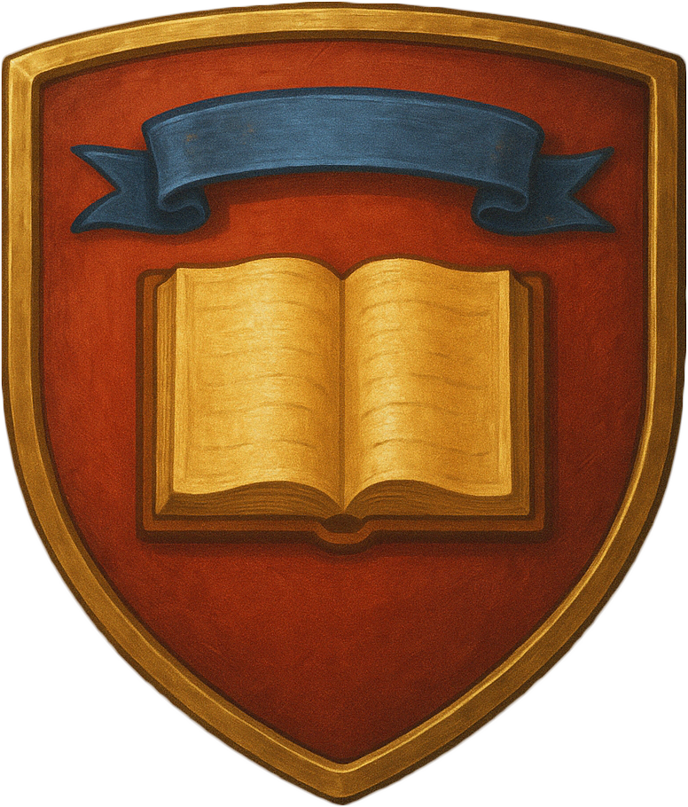
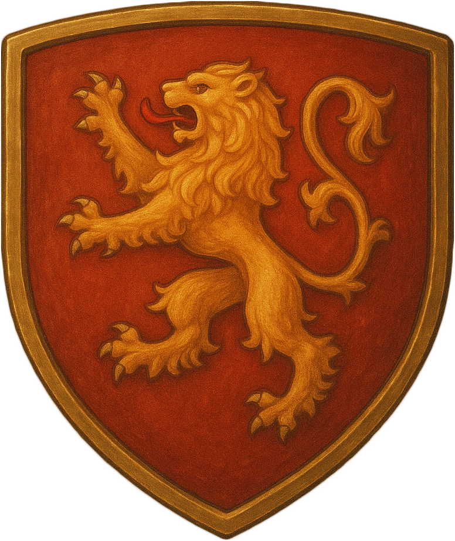
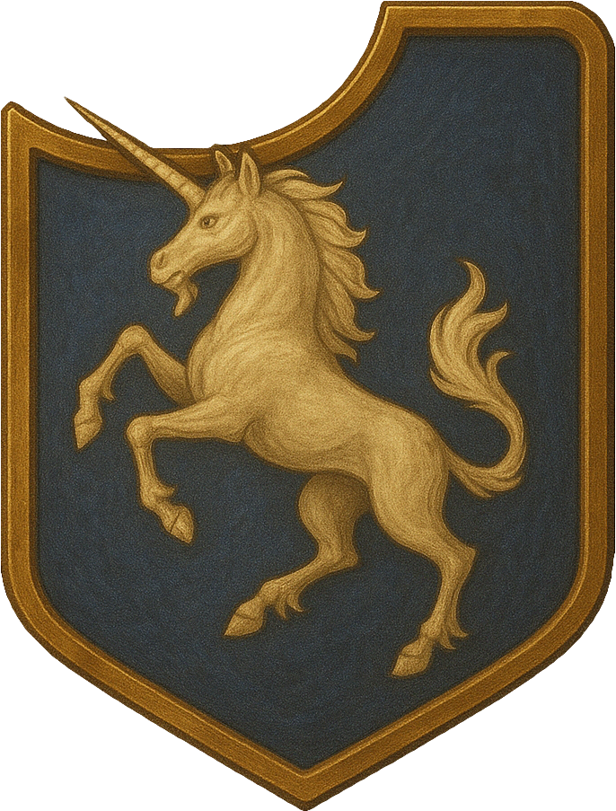
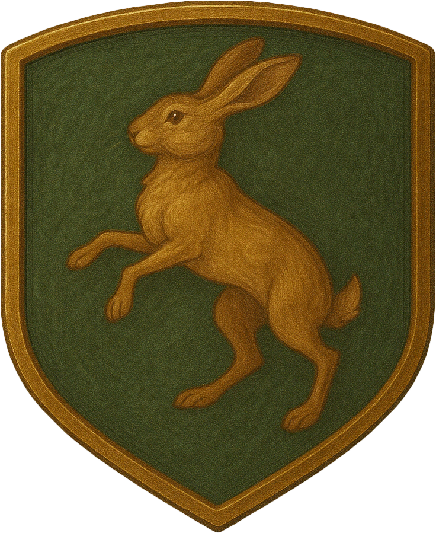
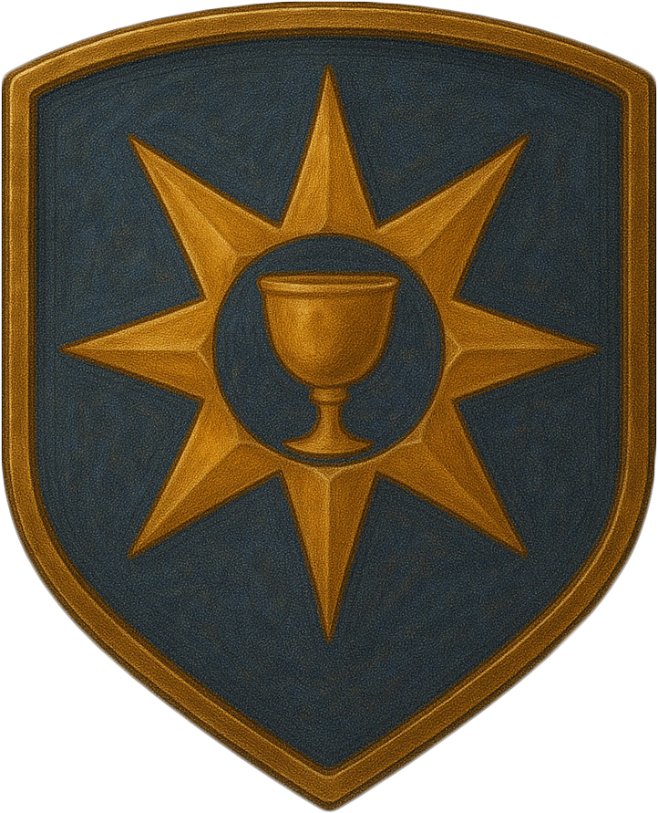

  <!doctype html>
  <html lang="en">
  <head>
  <meta charset="utf-8">
  <title>Quest Journal – 3 Column</title>
  <meta name="viewport" content="width=device-width,initial-scale=1">

  <!-- 1 FONTS -------------------------------------------------------- -->
  <style>
  @font-face{
    font-family:"ChampFleury";
    src:url("1529ChampFleuryW01.woff2") format("woff2"),
        url("1529ChampFleuryW01.woff")  format("woff");
  }
  @import url("https://fonts.googleapis.com/css2?family=Cinzel:wght@400;700&display=swap");
  :root{ --font:"ChampFleury","Cinzel",serif; }
  </style>

  <!-- 2 GLOBAL LAYOUT – 3 COLUMNS ----------------------------------- -->
  <style>
  html,body{height:100%;margin:0}
  body{
    font-family:var(--font);
    display:grid;
    grid-template-columns: 1fr 550px 33%; /* cards | list | log */
    background:url("blue-tile.png") repeat;
    color:#2e1d10;
    overflow:hidden;          /* never scroll the whole page        */
  }
  .rule {
    width: 100%;
    height: 34px;                     /* image is 190 px tall, so 30 keeps aspect */
    background: url("seperator.png") center / contain no-repeat;
    pointer-events: none;
    margin: 1.2rem 0;                 /* space above & below the line */
  }

  /* —— COLUMN 1 : QUEST CARDS —————————————— */
  #view{
    overflow:hidden;display:flex;flex-direction:column;gap:1vh;padding:1vh;  
    background: url("map-background.png");
    background-size: cover;
    background-position: right center;
  }
  #view .card{
        margin-right: 1em;

  }
  .card{flex:1 1 0;position:relative;min-height:0;text-align:center;overflow:hidden;
        background:url("quest-background.png") center / contain no-repeat;    filter: drop-shadow(0 2px 4px rgba(0, 0, 0, 0.8)) drop-shadow(0 6px 15px rgba(0, 0, 0, 0.3));}

  .card.inactive{opacity:.55;filter:grayscale(1);}  /* grey‑out */
  .card .overlay{position:absolute;inset:0;display:flex;flex-direction:column;
                 align-items:center;justify-content:center;max-width:60%;margin:auto;
                 padding:clamp(.6rem,4cqh,2rem);}                
  .card .shield{width:clamp(38px,28cqh,55px);}   
  .card h2{font-size:clamp(1rem,7.5cqh,2.1rem);margin:.3rem 0 .8rem}
  .card p {font-size:clamp(.72rem,4.5cqh,1rem);margin:.15rem 0}

  /* —— COLUMN 2 : SIDEBAR (TABS + LIST) —————————— */
  #side{display:flex;flex-direction:column;height:100%;background:url("paper-background.png") repeat;
        box-shadow:inset 0 0 10px #0007;overflow:hidden;}

  #tabs{display:flex;background:#4d3715;border-bottom:3px solid #916b32;height:110px;}
  #tabs .tab {
    flex: 0 0 102px;
    height: 110px;
    position: relative;

    /* two rows: shield up top, label down below */
    display: flex;
    flex-direction: column;
    align-items: center;
    justify-content: space-between;  /* push first & last items apart */

    /* give a little breathing room inside the cell */
    padding-top: 1.2em;
    padding-bottom: 8px;

    color: #d6c48f;
    border: none;
    background: none;
    cursor: pointer;
  }

  #tabs .tab.active{background:#916b32;color:#fff;}
  #tabs .tab::before {
    content: "";
    position: absolute;
    inset: 0;
    background: url("shield-background.png") center/cover no-repeat;
    z-index: 0;
    box-shadow:inset 0px 0px 17px 13px rgba(0, 0, 0, 0.2);
  }
#e-close{
     padding-top: 6px;
    padding-bottom: 6px;
  background:none;border:none;font-size:1.4rem;
  line-height:1; cursor:pointer;
}
  #tabs .tab img {
    position: relative;
    z-index: 1;
    width: 55%;
    height: auto;
    filter: drop-shadow(0 0 2px #0006);
    /* remove any margin-bottom: */
    margin: 0;
    filter: drop-shadow(2px 4px 6px black);
  }
  #tabs .tab span {
    position: relative;
    z-index: 1;
    font-family:var(--font);

    font-size: .9rem;
    line-height: 1;
    text-shadow: 0 1px 1px #0008;
    /* remove old margins, it'll sit flush below the icon */
    margin: 0;
  }

  /* Quest list */
  #list{flex:1;overflow:auto;padding:.8rem;}
  .item{display:flex;justify-content:space-between;align-items:flex-start;
        gap:.6rem;padding:.5rem .8rem;margin-bottom:.7rem;
        background:#fefaf0;border:1px solid #b49a6c;border-radius:6px;
        cursor:pointer;transition:background .15s;}
  .item:hover{background:#f4ead6;}
  .item img{height:35px;width:auto;flex:0 0 auto;}
  .item.done{color:#797;background:#eee9da;border-style:dashed;text-decoration:line-through;}
  .item.inactive{opacity:.55;filter:grayscale(1);}  

  .edit-btn,.act-btn{font-family:var(--font);font-size:.9rem;padding:.25rem 1rem;
    border:2px solid #6f4c19;border-radius:6px;background:linear-gradient(#b48b45,#8f642d);
    color:#fff;text-shadow:0 1px 1px #000;box-shadow:0 0 3px #0005;cursor:pointer;
    opacity:0;visibility:hidden;transition:opacity .15s;}
  .item:hover .edit-btn,.item:hover .act-btn{opacity:1;visibility:visible;}
  .act-btn.inactive{background:linear-gradient(#676868,#555);border-color:#444;}

  /* —— COLUMN 3 : LOG PANE —————————————— */
  #log {
    position: relative;
    background: url("blue-tile.png") repeat;
    overflow: visible;

    /* Border stays inside, and content is padded accordingly */
    box-sizing: border-box;
    padding: 2rem;

    /* Decorative border */
    border: 32px solid transparent;
    border-image: url("border.png") 32 fill repeat;
  }


  .corner {
    position: absolute;
    width: 105px;
    height: 105px;
    background-image: url("border-corner.png");
    background-size: cover;
    z-index: 99;
    pointer-events: none;
  }
#side{
    position:relative;            /* anchor pseudo-elements     */
    padding-left:20px;            /* room so content not hidden */
    padding-right:20px;
    box-sizing:border-box;        /* keep the 550 px width you set */
}

/* identical vertical strips */
#side::before,
#side::after{
    content:'';
    position:absolute;
    top:0; bottom:0;
    width:20px;                   /* ≈ sideborder.png width     */
    background:url('sideborder.png') center/contain repeat-y;
    pointer-events:none;          /* clicks go through          */
}

/* left uses the image as-is, right is mirrored for symmetry */
#side::before{ left:0; }
#side::after { right:0; transform:scaleX(-1); }

  /* Push corners out so they don't get squashed */
  .corner.tl { top: 0; left: 0; transform: translate(-18.7%, -20%); }
  .corner.tr { top: 0; right: 0; transform: translate(18.5%, -20%) scaleX(-1); }
  .corner.bl { bottom: 0; left: 0; transform: translate(-18.5%, 20%) scaleY(-1); }
  .corner.br { bottom: 0; right: 0; transform: translate(18.5%, 20%) scale(-1, -1); }
  /* Borders */
  #log {
    border-width: 20px;
    border-style: solid;
    border-image: url("border.png") 175.3  fill repeat;
  }
  .edge {
    position: absolute;
    height: 19.6px;
    width: 100%;
    background-image: url("border90.png");
    background-size: contain;
    background-repeat: repeat-x;
    z-index: 4;
    pointer-events: none;
  }


  .edge.top {
    top: -21.5px;
  }

  .edge.bottom {
    bottom:-21.4px;
      transform: rotate(180deg);
  }
::-webkit-scrollbar {
  width: 25px;
}

::-webkit-scrollbar-track {
  background: transparent;
}

::-webkit-scrollbar-thumb {
  background: url('slider.png') center center / contain no-repeat;
  border-radius: 20px;
  min-height: 100px;
/*  box-shadow: inset 0 0 6px rgba(0,0,0,0.5);*/
}

/* Optional: Hide ugly scroll corner */
::-webkit-scrollbar-corner {
  background: transparent;
}

  #log-content{
    font-size:1.05rem;
    color:#d6c48f;
    padding:2em;
    max-height:100%;          /* NEW — keeps it inside the frame   */
    overflow:auto;            /* NEW — you can now scroll long text*/
  }

  #log-content h2{font-size:1.45rem;margin-top:0;}
  #log-content li{margin-bottom:.3rem;}

  .task-row{display:flex !important;align-items:center;gap:.45rem;margin:.25rem 0;}
  #tabs .tab.active img{filter:brightness(1.3) drop-shadow(0 0 3px #ffd86a);}

  .task-row input[type="text"]{border:1px solid #b49a6c;border-radius:3px;
                               padding:.2rem .4rem;background:#fffbe9;}
  .task-row input[type="text"]{flex:1 1 auto;}   /* NEW — grows, stays inline */

  .task-row input[type="checkbox"]{width:10% !important;accent-color:#916b32;width:2em;height:2em;}
  /* MODAL EDITOR (mask covers entire screen) */
  #modal-mask{position:fixed;inset:0;background:#0009;backdrop-filter:blur(2px);display:none;z-index:99;}
  #editor-box{position:fixed;top:50%;left:50%;transform:translate(-50%,-50%);
    background:#f9f3e6;border:3px solid #916b32;border-radius:8px;padding:1rem 1.3rem;
    width:480px;max-width:95%;box-shadow:0 0 20px #0006;display:none;z-index:100;}
  #editor-box h3{margin-top:0;text-align:center}
  #editor-box label{font-size:.9rem;display:block;margin:.5rem 0}
  #editor-box input,#editor-box textarea,#editor-box select{width:100%;box-sizing:border-box;
    border:1px solid #b49a6c;border-radius:3px;padding:.25rem .4rem;
    font-family:inherit;font-size:.85rem;background:#fffbe9;}
  #editor-box button{margin:.45rem .25rem .2rem 0;font-family:var(--font);font-size:.9rem;
    padding:.25rem 1rem;border:2px solid #6f4c19;border-radius:6px;
    background:linear-gradient(#b48b45,#8f642d);color:#fff;text-shadow:0 1px 1px #000;
    box-shadow:0 0 3px #0005;cursor:pointer;}
  #editor-box button:hover{background:linear-gradient(#d0a958,#b38346);border-color:#6f4c19;}
  .item .edit-btn:hover,.item .act-btn:hover{background:linear-gradient(#d0a958,#b38346);border-color:#6f4c19;

  };


#add-subtask{
    display:flex;
    gap:.4rem;
    margin:.5rem 0 .3rem;
    margin-left: 3.2em;
} 

/* input: transparent, faint placeholder, brown underline only on hover/focus */
#add-subtask input{
    flex:1;
    font-family:var(--font);
    font-size:1rem;
    padding:.15rem .3rem .1rem;
    background:transparent;
    border:none;
    border-bottom:1px solid transparent;
    color:#d6c48f;                      /* same parchment text colour          */
    transition:border-color .15s;
    margin-left: 3.3em;
}
#add-subtask input::placeholder{color:#d6c48f80;}   /* faint text                   */
#add-subtask input:hover,
#add-subtask input:focus{
    border-bottom:1px solid #916b32;    /* accented brown on hover/focus       */
    outline:none;
}

/* button: re-use gold-btn palette, slimmer padding */
#add-subtask .add-btn{
    padding:.05rem .75rem;
    font-size:1.1rem;
}

  .gold-btn{
    font-family:var(--font);
    font-size:.9rem;
    padding:.25rem 1rem;
    border:2px solid #6f4c19;
    border-radius:6px;
    background:linear-gradient(#b48b45,#8f642d);
    color:#fff;
    text-shadow:0 1px 1px #000;
    box-shadow:0 0 3px #0005;
    cursor:pointer;
    transition:background .15s;
}
.gold-btn:hover{
    background:linear-gradient(#d0a958,#b38346);   /* brighter on hover   */
}

/* red delete variant uses the same hover idea */
.red-btn{
    composes: gold-btn;               /* if your build supports it … */
    background:linear-gradient(#b05050,#8d2d2d);
    border-color:#702020;
}
.del-btn:hover{
    background:linear-gradient(#d46d6d,#a24141)!important;
}


/* notes box – keep line-breaks, wrap long words */
#notes-box{
    white-space:pre-wrap;
    word-break:break-word;
    max-height:25rem;                 /* scrolls independently       */
    overflow:auto;
}

  </style>
  </head>
  <body>

  <!-- COLUMN 1 : QUEST CARDS -->
  <section id="view"></section>

  <!-- COLUMN 2 : SIDEBAR -->
  <aside id="side">
    <nav id="tabs">
      <button class="tab active" data-cat="all"><span>All</span></button>
      <button class="tab" data-cat="main"><span>Main</span></button>
      <button class="tab" data-cat="side"><span>Side</span></button>
      <button class="tab" data-cat="task"><span>Task</span></button>
      <button class="tab" data-cat="done"><span>Done</span></button>
    </nav>
    <div id="list"></div>
    <div id="footer" style="padding:.6rem;text-align:center">
      <div id="counter" style="font-size:.8rem;margin-bottom:.4rem;"></div>
      <button id="add-quest-btn"
              class="edit-btn gold-btn"
              style="opacity:1;visibility:visible;width:100%">＋ Add Quest</button>
  </div>

  </aside>

  <!-- COLUMN 3 : LOG PANE -->
  <section id="log">
    <div class="corner tl"></div>
    <div class="corner tr"></div>
    <div class="corner bl"></div>
    <div class="corner br"></div>
      <div class="edge top"></div>
    <div class="edge bottom"></div>

    <div id="log-content"></div>
  </section>

  <!-- Modal editor (re‑used) -->
  <div id="modal-mask"></div>
  <div id="editor-box"></div>

  <script>
  /* ------------------------------------------------------------------ */
  /*  DATA + FIRST‑RUN BUILD                                            */
  /* ------------------------------------------------------------------ */
  let quests = [];
function saveQuest(q){
   const clean = structuredClone(q);   // <-- add this line
   fetch(`/api/quests/${q.id}`,{
       method:'PUT',
       headers:{'Content-Type':'application/json'},
       body:JSON.stringify(clean)
   });
}
  function canActivate(){
     return quests.filter(q => q.active!==false && q.category!=='done').length < 3;
  }
  document.getElementById('add-quest-btn').onclick = async ()=>{
    if(!canActivate()){
        alert('Finish or deactivate a quest first (max 3 active).');
        return;
    }
    // 1) ask the server for a blank quest (comes back with a fresh id)
    const rsp   = await fetch('/api/quests/blank', {method:'POST'});
    const blank = await rsp.json();
    quests.push(blank);

    // 2) open it immediately in the editor
    openEditor(quests.length-1);
};


  const view  = document.getElementById('view'),
        list  = document.getElementById('list'),
        tabs  = document.getElementById('tabs'),
        logPane = document.getElementById('log-content');

  fetch('/api/quests').then(r=>r.json()).then(js=>{quests=js;renderCards();renderList('all');});

  /* ------------------------------------------------------------------ */
  /*  CARD COLUMN                                                       */
  /* ------------------------------------------------------------------ */
  function renderCards(){
    view.innerHTML='';
    quests.filter(q=>q.active!==false).slice(0,3).forEach((q,idx)=>view.appendChild(makeCard(q,idx)));
  }
  function makeCard(q,idx){
    const d=document.createElement('div');
    d.className='card'+(q.active===false?' inactive':'')+(q.category==='done'?' done':'');
    d.dataset.idx=idx;
    d.innerHTML=`<div class="overlay"><h2>${q.title}</h2><p>${q.objective||''}</p><p>${q.description||''}</p></div>`;
    return d;
  }
  function refreshAll() {
      renderCards();                                       // rebuild the 3 big cards
      const currentTab = document.querySelector('#tabs .tab.active')
                         .dataset.cat;                     // stay on the same tab
      renderList(currentTab);                              // rebuild the sidebar list
  }

  view.addEventListener('click',e=>{const c=e.target.closest('.card');if(c)openDrawer(+c.dataset.idx)});

  /* ------------------------------------------------------------------ */
  /*  SIDEBAR LIST + TABS                                               */
  /* ------------------------------------------------------------------ */
  function renderList(cat){
    list.innerHTML = '';

    // which quests belong in this tab?
    const shown = quests.filter(q=>{
        if(cat==='done')      return q.category==='done';     // <- KEEP
        if(cat==='all')       return true;
        return (q.category===cat) || (q.category==='done' && q.prevCat===cat);
    });

    const active = shown.filter(q => q.category!=='done');
    const fins   = shown.filter(q => q.category==='done');

    /* ---------- helper for every row ---------- */
    const makeRow = (q)=>{                         // (idx no longer needed here)
        const off = q.active===false;
        const div = document.createElement('div');
        div.className = 'item'+(off?' inactive':'')+(q.category==='done'?' done':'');
        div.dataset.idx = quests.indexOf(q);       // store real index
        /*  button row: if quest is “done” we omit the Activate/Deactivate button  */
        const actBtn = q.category==='done' ? '' :
             `<button class="act-btn ${off?'inactive':''}">
                 ${off?'Activate':'Deactivate'}
              </button>`;

        div.innerHTML = `
          <div style="display:flex;align-items:center;gap:1.5rem">
             
             <span>${q.title}</span>
          </div>
          <div style="display:flex;gap:.4rem">
             ${actBtn}
             <button class="edit-btn">Edit</button>
          </div>`;
        return div;
    };

    /* ---------- build the list ---------- */
    if(cat==='done'){                              // DONE TAB = only finished
        fins.forEach(q=>list.appendChild(makeRow(q)));
    }else{
        active.forEach(q=>list.appendChild(makeRow(q)));
        if(fins.length){                           // separator + finished
            list.appendChild(Object.assign(document.createElement('div'),
                                           {className:'rule'}));
            fins.forEach(q=>list.appendChild(makeRow(q)));
        }
    }

    /* update counter every time list redraws */
    document.getElementById('counter')
            .textContent = `${quests.filter(q=>q.category==='done').length}
                           /${quests.length} quests finished`;
  }


  tabs.addEventListener('click',e=>{const b=e.target.closest('.tab');if(!b)return;tabs.querySelectorAll('.tab').forEach(t=>t.classList.remove('active'));b.classList.add('active');renderList(b.dataset.cat)});

list.addEventListener('click', e=>{
    const row  = e.target.closest('.item');
    if(!row || e.target.classList.contains('rule')) return;

    const idx  = +row.dataset.idx;
    const q    = quests[idx];

    if(e.target.classList.contains('edit-btn')){
        openEditor(idx);                        // edit
    }else if(e.target.classList.contains('act-btn')){
        if(q.category==='done') return;         // no toggling on finished quests

        if(!q.active && !canActivate()){
            alert('You may only have three active quests at once.');
            return;
        }
        q.active = !q.active;
        saveQuest(q);
        refreshAll();
        if(logPane.dataset.idx == idx) openDrawer(idx);     // keep drawer fresh
    }else{
        openDrawer(idx);                       // click anywhere else → show log
    }
});

  /* ------------------------------------------------------------------ */
  /*  LOG PANE                                                          */
  /* ------------------------------------------------------------------ */
function openDrawer(i){
    const q = quests[i];
    logPane.dataset.idx = i;

    const todo = q.subtasks.filter(t => !t.done);
    const done = q.subtasks.filter(t =>  t.done);

    /* build html for both lists */
    const mkRow = (t, si, crossed)=>
       `<label class="task-row" draggable="true" data-si="${si}">
          <input type="checkbox" data-si="${si}" ${t.done ? 'checked' : ''}>
          <span style="${crossed?'text-decoration:line-through;opacity:.6':''}">
              ${t.text}
          </span>
        </label>`;


    const todoHTML = todo.map(t => mkRow(t, q.subtasks.indexOf(t), false)).join('');
    const doneHTML = done.map(t => mkRow(t, q.subtasks.indexOf(t),  true)).join('');

    const tasksHTML = q.subtasks.length
        ? `<h4>Sub Tasks</h4>${todoHTML}
           ${done.length ? doneHTML : ''}
           `
        : '';

    logPane.innerHTML = `
    <h2>${q.title}</h2>
    <p><strong>${q.objective||''}</strong></p>
    <p>${q.description||''}</p>
    <div class="rule"></div>
    ${tasksHTML}

    <!-- 🆕 inline adder -->
    <form id="add-subtask">
        <input type="text" placeholder="New sub task…">
        <button type="submit" class="gold-btn add-btn" style="visibility:hidden;">＋</button>
    </form>
    <div class="rule"></div>
    <h4 style="margin-top:.6rem">Notes</h4>
    <div id="notes-box">${q.notes || '<em>no notes yet</em>'}</div>
    <button class="note-btn edit-btn gold-btn"
            style="opacity:1;visibility:visible;margin-top:.4rem">
       ✎ Edit Notes
    </button>`;

}


logPane.addEventListener('click', e => {

    /*  🚑  NEW guard – let the 'change' handler do its job  */
    if (e.target.matches('input[type="checkbox"]')) return;

    if (e.target.classList.contains('note-btn')){
        openNotes(+logPane.dataset.idx);
        return;
    }

    const idx   = +logPane.dataset.idx;
    const quest = quests[idx];

    saveQuest(quest);        // probably not needed any more
    // refreshAll();
    // openDrawer(idx);
});


logPane.addEventListener('change', e => {
    if (!e.target.matches('input[type="checkbox"]')) return;

    const qi = +logPane.dataset.idx;      // quest open at the moment
    const si = +e.target.dataset.si;      // sub-task you toggled

    quests[qi].subtasks[si].done = e.target.checked;


    saveQuest(quests[qi]);

    /*  <-  ADD THESE TWO LINES   */
    refreshAll();            // cards + sidebar
    openDrawer(qi);          // right-hand pane
});
let dragFrom = null;

logPane.addEventListener('dragstart', e=>{
    const row = e.target.closest('.task-row');
    if(!row) return;
    dragFrom = +row.dataset.si;
    e.dataTransfer.effectAllowed = 'move';
});

logPane.addEventListener('dragover', e=>{
    if(!e.target.closest('.task-row')) return;
    e.preventDefault();                         // allow drop
});

logPane.addEventListener('drop', e=>{
    const toRow = e.target.closest('.task-row');
    if(!toRow) return;

    const qi   = +logPane.dataset.idx;
    const from = dragFrom;
    const to   = +toRow.dataset.si;
    if(from===null || from===to) return;

    /* move item inside the subtasks array */
    const [moved] = quests[qi].subtasks.splice(from,1);
    quests[qi].subtasks.splice(to,0,moved);

    dragFrom = null;
    saveQuest(quests[qi]);
    refreshAll();
    openDrawer(qi);
});

logPane.addEventListener('submit', e=>{
    if(e.target.id!=='add-subtask') return;
    e.preventDefault();

    const text = e.target.querySelector('input').value.trim();
    if(!text) return;

    const qi = +logPane.dataset.idx;
    quests[qi].subtasks.push({text, done:false});
    saveQuest(quests[qi]);
    refreshAll();
    openDrawer(qi);                // stay on the same quest
});


function openNotes(idx){
    const q    = quests[idx];
    const box  = document.getElementById('editor-box');
    const mask = document.getElementById('modal-mask');

    /*  --- tiny modal -------------------------------------------------- */
    box.innerHTML = `
        <div style="display:flex;justify-content:space-between;align-items:center">
           <h3 style="margin:0">Edit Notes</h3>
           <button id="n-close">X</button>
        </div>

        <textarea id="n-text"
                  style="width:100%;height:500px;margin-top:.6rem;
                         border:1px solid #b49a6c;border-radius:4px;
                         padding:.5rem;background:#fefaf0;
                         font-family:inherit;font-size:.9rem;">${q.notes||''}</textarea>

        <div style="text-align:center;margin-top:.8rem">
        <button id="n-save"
                   style="padding:.3rem 1.2rem"
                   >Save</button>
        </div>`;

    mask.style.display = box.style.display = 'block';

    /* save */
    box.querySelector('#n-save').onclick = ()=>{
        q.notes = box.querySelector('#n-text').value.trim();
        saveQuest(q);
        refreshAll();
        openDrawer(idx);      // keep drawer in sync
        close();
    };

    const close = ()=>{
        mask.style.display = box.style.display = 'none';
        box.innerHTML = '';
    };
    box.querySelector('#n-close').onclick = close;
    mask.onclick = close;
}


  /* ------------------------------------------------------------------ */
  /*  MODAL EDITOR                                                      */
  /* ------------------------------------------------------------------ */
  function openEditor(i){
    const q=quests[i], box=document.getElementById('editor-box'),
          mask=document.getElementById('modal-mask');

    box.innerHTML=`
      <div style="
             display:flex;
             justify-content:space-between;
             align-items:center;
             position:relative;
             margin-bottom:.6rem">

         <button id="e-delete" class="del-btn" style="  background:#9c3737;color:#fff;
  border:2px solid #702020;border-radius:6px;
  padding:.25rem .6rem;cursor:pointer
"
                 >Delete</button>

         <h3 style="margin:0;flex:1;text-align:center">Edit Quest</h3>

         <button id="e-close">X</button>
      </div>

      <label>Title <input id="e-title" value="${q.title}"></label>
      <label>Objective <input id="e-obj" value="${q.objective||''}"></label>
      <label>Description
        <textarea id="e-desc" rows="3">${q.description||''}</textarea>
      </label>

      <label>Sub Tasks
        <div id="e-tasks">
          ${(q.subtasks||[]).map(t=>`
            <label class="task-row">
              <input type="checkbox" ${t.done?'checked':''}>
              <input type="text" value="${t.text}">
            </label>`).join('')}
          <button id="add-task" type="button">+ Task</button>
        </div>
      </label>

      <label>Quest Type
        <select id="e-cat">
          <option value="main" ${q.category==='main'?'selected':''}>Main</option>
          <option value="side" ${q.category==='side'?'selected':''}>Side</option>
          <option value="task" ${q.category==='task'?'selected':''}>Task</option>
          <option value="done" ${q.category==='done'?'selected':''}>Done</option>
        </select>
      </label>

      <div style="text-align:center;margin-top:1.1rem">
        <button id="e-save">Save</button>
        <button id="e-toggle">${q.category==='done'?'Mark Undone':'Mark Done'}</button>
      </div>`;

    mask.style.display=box.style.display='block';

    /* new task row */
    box.querySelector('#add-task').onclick=()=>{
      const row=document.createElement('label'); row.className='task-row';
      row.innerHTML='<input type="checkbox"><input type="text">';
      box.querySelector('#e-tasks').insertBefore(row,box.querySelector('#add-task'));
    };

    /* save edits */
    box.querySelector('#e-save').onclick=()=>{
      q.title      = document.getElementById('e-title').value.trim();
      q.objective  = document.getElementById('e-obj').value.trim();
      q.description= document.getElementById('e-desc').value.trim();
      q.subtasks   = Array.from(box.querySelectorAll('#e-tasks label')).map(r=>({
                       text:r.querySelector('input[type="text"]').value.trim(),
                       done:r.querySelector('input[type="checkbox"]').checked
                     })).filter(t=>t.text);
      q.category   = document.getElementById('e-cat').value;
      q.active     = q.category!=='done';
      saveQuest(q);
      refreshAll();          // <-- ADD THIS
      openDrawer(i);         // keep drawer in sync if it’s open
      closeModal();
    };

    /* done / undone toggle */
  box.querySelector('#e-toggle').onclick = () => {
     /* move between active ↔︎ done, remember original category */
     if(q.category==='done'){
          q.category = q.prevCat || 'side';
          q.active   = true;
          delete q.prevCat;
     }else{
          q.prevCat  = q.category;
          q.category = 'done';
          q.active   = false;
     }
      saveQuest(q);
      refreshAll();
      openDrawer(i);
      closeModal();
  };


    const closeModal=()=>{mask.style.display=box.style.display='none'; box.innerHTML='';};
    box.querySelector('#e-close').onclick=closeModal;
    mask.onclick=closeModal;
    box.querySelector('#e-delete').onclick = ()=>{
      if(!confirm('Delete this quest permanently?')) return;

      // 1) remove from array
      const i = quests.indexOf(q);
      if(i>-1) quests.splice(i,1);

      // 2) tell the server (optional – comment out if you don’t have the route)
      fetch(`/api/quests/${q.id}`,{ method:'DELETE' });

      // 3) refresh UI
      closeModal();
      refreshAll();

      // if the log pane was showing this quest, clear it
      if(logPane.dataset.idx == i) logPane.innerHTML='';
  };

  }


  </script>
  </body>
  </html>
